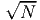
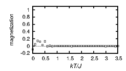
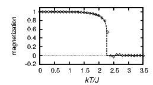
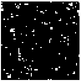
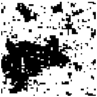
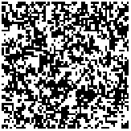

Random number generators are not truly random, but use deterministic rules to generate “pseudorandom” numbers, for example xi+1 = (23xi)mod(108 + 1), meaning the remainder of 23xi∕100000001. The starting value x0 is called the “seed.” Pseudorandom number generators can never ideally satisfy all desired statistical properties. For example, since there are only finitely many computer representable numbers they will ultimately always be periodic, though the period can be extremely long. Random number generators are said to be responsible for many wrong computational results. Particular choices of the seed can lead to short periods. Likewise, the coefficients in formulas like the one above need to be chosen carefully. Many implementations of pseudorandom number generators were simply badly chosen or faulty. The situation has however improved and current random number generators suffice for almost any practical purpose. Source code routines seem to be universally better than built-in random number generators provided by libraries.
Pseudorandom number generators produce a uniform distribution of numbers in an interval, typically either integers or real numbers in the interval from 0 to 1 (without perhaps one or both of the endpoints). How do we obtain a different distribution? A new probability distribution, p(x), can be related to a given one, q(y), by a transformation y = y(x). The probability to be between x and x + dx is p(x)dx. By construction, this equals the probability to be between y and y + dy. Hence, |p(x)dx| = |q(y)dy|, where the absolute values are needed because y could decrease with x, while probabilities are always positive. If q(y) is uniformly distributed between 0 and 1, then p(x) = |dy∕dx| for 0 < y < 1 and otherwise p(x) = 0. Integration with respect to x and inverting yields the desired transformation. For example, an exponential distribution p(x ≥ 0) = exp(-x) requires y(x) = ∫ p(x)dx = - exp(-x) + C and therefore x(y) = - ln(C -y). With C = 1 the distribution has the proper bounds. This transforms uniformly distributed numbers to exponentially distributed numbers. In general, it is necessary to invert the integral of the desired distribution function p(x). That can be computationally expensive, particularly when the inverse cannot be obtained analytically.
Alternatively the desired distribution p(x) can be enforced by rejecting numbers with a probability 1 -p(x), using a second randomly generated number. These two methods are called “transformation method” and “rejection method,” respectively.
Recommended Reading: For generation and testing of random numbers see Knuth, The Art of Computer Programming, Vol. 2. Methods for generating probability distributions are found in Devroye, Non-Uniform Random Variate Generation, which is also available on the web at http://luc.devroye.org/rnbookindex.html.
Besides obvious uses of random numbers there are numerical methods that intrinsically rely on probabilistic means. A representative example is the Monte Carlo algorithm for multi-dimensional integration.
Consider the following method for one-dimensional integration. We choose random coordinates x and y, evaluate the function at x, and see whether y is below or above the graph of the function; see figure 11.1. If this is repeated with many more points over a region, then the fraction of points that fall below the graph is an estimate for the area under the graph relative to the area of the entire region. This is Monte Carlo integration.
Intuitively this seems to be a crude method for integration, because it discards the actual value of the function. Let’s quantify the error of this numerical scheme.
Suppose we choose N randomly distributed points, requiring N function evaluations. How fast does the integration error decrease with N? The probability of a random point to be below the graph is proportional to the area a under the graph. Without loss of the generality, the constant of proportionality can be set to one. The probability P of having m points below the graph and N - m points above the graph is given by a binomial distribution, P(m) = (n m) am(1 - a)N-m. An error E can be defined as the root mean square difference between the exact area a and the estimated area m∕N: E2 = ∑ m=0N(m∕N -a)2P(m). This sum is E2 = (1 -a)a∕N. When the integral is estimated from N sample points, the error E is proportional to 1∕. For integration in two or more rather than one variable, the exact same calculation applies.
A conventional summation technique to evaluate the integral has an error too, due to discretization. With a step size of h, the error would be typically O(h2) or O(h4), depending on the integration scheme. In one dimension, h is proportional to 1∕N and it makes no sense to use Monte Carlo integration instead of conventional numerical integration techniques.
In more than one variable, conventional integration requires more function evaluations to achieve a sufficient resolution in all directions. For N function evaluations and d variables the grid spacing h is proportional to N-1∕d. Hence, in many dimensions, the error decreases extremely slowly with the number of function evaluations. With, say, a million function evaluations for an integral over six variables, there will only be 10 grid points along each axis. The accuracy of Monte Carlo integration, on the other hand, is the same for any number of integration variables. It is more efficient to distribute the one million points randomly and measure the integral in this way.
Once can speak of a “dimension barrier,” because the number of function evaluations required for a certain accuracy increases exponentially with the number of dimensions. Another way to put it: It’s not that Monte Carlo Integration is fast, it’s that multi-dimensional integrals are so slow.
Statistical methods can be used efficiently to solve deterministic problems!
Another advantage of Monte Carlo integration in many dimensions is that irregularly shaped boundaries can be easily accommodated.
The Ising model consists of a regular lattice where each site has a “spin” which points up or down. The spins are thought of as magnets that interact with each other. The energy E at each site is in this model determined by the nearest neighbors (n.n.) only: Ei = -J ∑ (n.n.)sisj, where the spin s is +1 or -1, and J is a positive constant. The lattice can be in one, two, or more dimensions. In one dimension there are two nearest neighbors, on a two-dimensional square lattice, four nearest neighbors, and so on. There is no real physical system that behaves exactly this way, but it is a simple model for the thermodynamics of an interacting system. Ferromagnetism is the closest physical analog. (Like magnetic poles repel each other, and the energy is lowest when neighboring magnets have opposite orientations. Hence, it would appear we should choose J < 0 in our model. However, electrons in metals interact in several ways and in ferromagnetic materials the energies sum up to align electron dipoles. For this reason we consider J > 0.)
The spins have the tendency to align with each other to minimize energy, but this is counteracted by thermal fluctuations. At zero temperature all spins will align in the same orientation to reach minimum energy (either all up or all down, depending on the initial state). At nonzero temperatures will there be relatively few spins opposite to the overall orientation of spins, or will there be a roughly equal number of up and down spins? In the former case there is macroscopic magnetization; in the latter case the average magnetization vanishes.
According to the laws of statistical mechanics the probability to occupy a state with energy E is proportional to exp(-E∕kT), where k is the Boltzmann constant and T the temperature. In equilibrium the number of transitions from up to down equals the number of transitions from down to up. Let W(+ →-) denote the probability for a flip from spin up to spin down. Since in steady state the probability P of an individual spin to be in one state is proportional to the number of sites in that state, the equilibrium condition translates into P(+)W(+ →-) = P(-)W(-→ +). For a simulation to reproduce the correct thermodynamic behavior, we hence need W(+ →-)∕W(-→ +) = P(-)∕P(+) = exp[-(E(-) -E(+))∕kT]. For the Ising model this ratio is exp(2bJ∕kT), where b is an integer that depends on the orientations of the nearest neighbors. There is more than one possibility to choose the transition probabilities W(+ →-) and W(-→ +) to achieve the required ratio. Any of them will lead to the same equilibrium properties. Call the energy difference between before and after a spin flip ΔE, defined to be positive when the energy increases. One possible choice is to flip from the lower-energy state to the higher-energy state with probability exp(-ΔE∕kT) and to flip from the higher-energy state to the lower-energy state with probability one. If ΔE = 0, when there are equally many neighbors pointing in the up and down direction, then the transition probability is taken to be one, because this is the limit for both of the preceding two rules. Ideas have names and this method, which transitions to a higher energy with probability exp(-ΔE∕kT) and falls to a lower energy with probability 1, is known as the “Metropolis algorithm.”
(a)
(b)
Such a simulation requires only a short program, which uses a random number generator. As intended the program produces the following flips for the one-dimensional model (considering the middle one of three spins): + - + → + + +, + + -→ + --, and either + + + → + + + or + + + → + - +. The last transition never occurs at zero temperature. For T = 0 the exponent diverges, but the computer may even handle that correctly.
Figure 11.2 shows the magnetization as a function of temperature obtained with such a program. Part (a) is for the one-dimensional Ising model and the spins are initialized in random orientations. The scatter of points at low temperatures arises from insufficient equilibration and averaging times. In one dimension the magnetization vanishes for any temperature larger than zero.
But in two dimensions there are two phases. Part (b) of figure 11.2 shows the magnetization for the two-dimensional Ising model, where initially all spins point up. At low temperatures there is magnetization, but at high temperatures the magnetization vanishes. The two phases are separated by a continuous, not a discontinuous, change in magnetization. As the system size increases this transition becomes more and more sharply defined. For an infinite system, the magnetization vanishes beyond a specific temperature Tc ≈ 2.269J∕k, the “critical temperature.”
(a) (b) (c)
Figure 11.3 shows snapshots of the spin configuration in the two-dimensional Ising model, at temperatures below, close to, and above the phase transition. At low temperatures, panel (a), most spins are aligned in the same direction, with a few exceptions. Occasionally there are individual spins that flip. In this regime, spins correlate over long distances, although the interactions include only nearest neighbors. At higher temperatures there are more fluctuations and more spins of the opposite orientation. Above the phase transition, panel (c), there are a roughly equal number of spins up and down, clustered in small groups. The fluctuations dominate and there is no macroscopic magnetization.
For the Ising model the total energy of the system can change with time. Call Ω(E) the number of spin configurations with total energy E, where E is the sum of the energies of all individual spins, E = ∑ jEj. The probability to find the system in energy E is proportional to Ω(E) ∏ j exp(-Ej∕kT) = Ω(E) exp(-E∕kT). This expression can also be written as exp(-F∕kT) with F = E -kT ln Ω(E). For a given temperature, the system is thus most often in a configuration that minimizes F, because it makes the exponential largest. The quantity F becomes smaller when the energy is lowered or when k ln Ω(E), also called entropy, increases. Low energy configurations prevail at low temperature and form the ordered phase of the system; high entropy configurations prevail at high temperature and form the disordered phase.
The thermodynamic properties of the Ising model can be obtained analytically if one manages to explicitly count the number of possible configurations as a function energy. This can be done in one dimension, but in two dimensions it is much, much, much harder. The dashed line in figure 11.3(b) shows this exact solution, first obtained by Lars Onsager. In three dimensions no one has achieved it, and hence we believe that it is impossible to do so. The underlying reason why the magnetization can be obtained with many fewer steps with the Metropolis algorithm than by counting states, is that a probabilistic method automatically explores the most likely configurations. The historical significance of the Ising model stems largely from its analytic solution. Hence, our numerical attempts in one and two dimensions have had a merely illustrative nature. But even simple variations of the model (e.g., the Ising model in three dimensions or extending the interaction beyond nearest neighbors) are not solved analytically. In these cases numerics is valuable and no more difficult than the simulations we have gone through here.